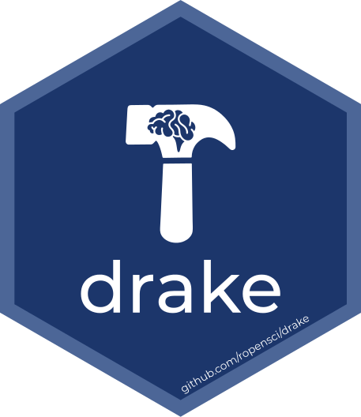

beavers1 data (Nature on PBS via Giphy)tl;dr
I spoke at the UK Government Data Science Festival about Will Landau’s R package {targets} for workflow reproducibility. You can jump to the embedded slides below.
{targets}
Reproducibility is an important part of any data analysis. Will people be able to re-run your code from scratch on a different machine without you present?
R has lots of solutions for making your analysis reproducible, but one thing that gets overlooked is the reproducibility of the workflow itself. In other words, the interdependencies between functions, file and objects and the order in which they run.

The R package {targets} ‘remembers’ these relationships. In short, {targets} makes sure that only the impacted objects are re-run when you update your analysis. This means you don’t have to recreate everything from scratch each time.
A very basic overview of using {targets}:
- Write a pipeline script
- Inspect the pipeline (including visually)
- Execute the pipeline
- Change stuff
- Go to 2
With functions:
tar_script()creates a_targets.Rfile, which is where you declare you write functions and options and create your targets withtar_targets(), declaring the pipeline withtar_pipeline()tar_manifest()lets you check the configuration of your targetstar_visnetworkvisualises your pipeline as a graph networktar_make()executes your pipeline, which caches outputs and metadata in a_targets/directory that can be read from withtar_read()andtar_load()(you could use )tar_outdated()prints any targets that need to be updated following any changes to other targets, after which you can reinspect your pipeline and re-make it
I’m not going to use this post to explain how to use the package in depth, but do check out the {targets} manual or the many other resources I’ve listed in the resources section below.
Slides and code
The slides1 are embedded below. The presentation considers the need for workflow reproducibility followed by a small, contrived demo of the {targets} package in action: a short pipeline for rendering an R Markdown report with a plot and a table.2
You can also open the slides in a dedicated browser window. Press P for presenter notes, O for a slide overview and F for fullscreen.
The presentation’s source is in a GitHub repo that also contains {targets}-related files and scripts for running the example seen in the slides. See the ‘Demo code’ section of the README for details.
It wasn’t possible in this talk to go into greater depth on other excellent {targets} features like parallel computing and branching, but you can read about them in the {targets} manual.
But… {drake}?
You may have noticed I have cunningly plagiarised myself by re-using slides from a presentation to Bioinformatics London in January 2020.

That presentation was about {drake}, another workflow reproducibility package by Will Landau. I also wrote about the {drake} package as a tool for the Reproducible Analytical Pipelines (RAP) movement in UK government.
So what’s the difference between the two packages? In Will’s own words:
years of community feedback [on {drake}] have exposed major user-side limitations regarding data management, collaboration, parallel efficiency, and pipeline archetypes
{drake} is the more mature package and certainly it works, but {targets} is designed to address certain {drake} issues that only became apparent with ongoing, large-scale user testing in the wild. While {targets} addresses these problems, it’s worth noting that it’s still in development (v0.0.0.9002 at time of writing) and changes may be implemented that limit the usefulness of this post in future.
On the plus side, the {targets} package–along with the helper package {tarchetypes}, which I haven’t had time to mention here–is going through a peer review with rOpenSci (as of October 2020), which will help perfect the package and give people even greater confidence in its suitability for everyday use.
Ultimately it’s up to the user to decide which package they’d prefer to use for now, but {targets} looks to be the future for workflow reproducibility implemented within the R ecosystem.
Resources
Will has put a lot of effort into making some top quality documentation for {targets}, along with some handy learning tools:
- the user manual, which includes a walkthrough
- the reference website, which includes the statement of need vignette
- A tutorial, which can be run in the cloud
- targetsketch: a Shiny app for learning and visualising
- a repo with a minimal example (more complex examples are available too)
- slides from the Los Angeles R Users Group Meetup (October 2020)
Environment
Session info
Last rendered: 2023-07-18 21:15:29 BSTR version 4.3.1 (2023-06-16)
Platform: aarch64-apple-darwin20 (64-bit)
Running under: macOS Ventura 13.2.1
Matrix products: default
BLAS: /Library/Frameworks/R.framework/Versions/4.3-arm64/Resources/lib/libRblas.0.dylib
LAPACK: /Library/Frameworks/R.framework/Versions/4.3-arm64/Resources/lib/libRlapack.dylib; LAPACK version 3.11.0
locale:
[1] en_US.UTF-8/en_US.UTF-8/en_US.UTF-8/C/en_US.UTF-8/en_US.UTF-8
time zone: Europe/London
tzcode source: internal
attached base packages:
[1] stats graphics grDevices utils datasets methods base
loaded via a namespace (and not attached):
[1] htmlwidgets_1.6.2 compiler_4.3.1 fastmap_1.1.1
[4] cli_3.6.1 tools_4.3.1 htmltools_0.5.5
[7] xaringanExtra_0.7.0 rstudioapi_0.15.0 yaml_2.3.7
[10] rmarkdown_2.23 knitr_1.43.1 jsonlite_1.8.7
[13] xfun_0.39 digest_0.6.33 rlang_1.1.1
[16] evaluate_0.21
Reuse
CC BY-NC-SA 4.0